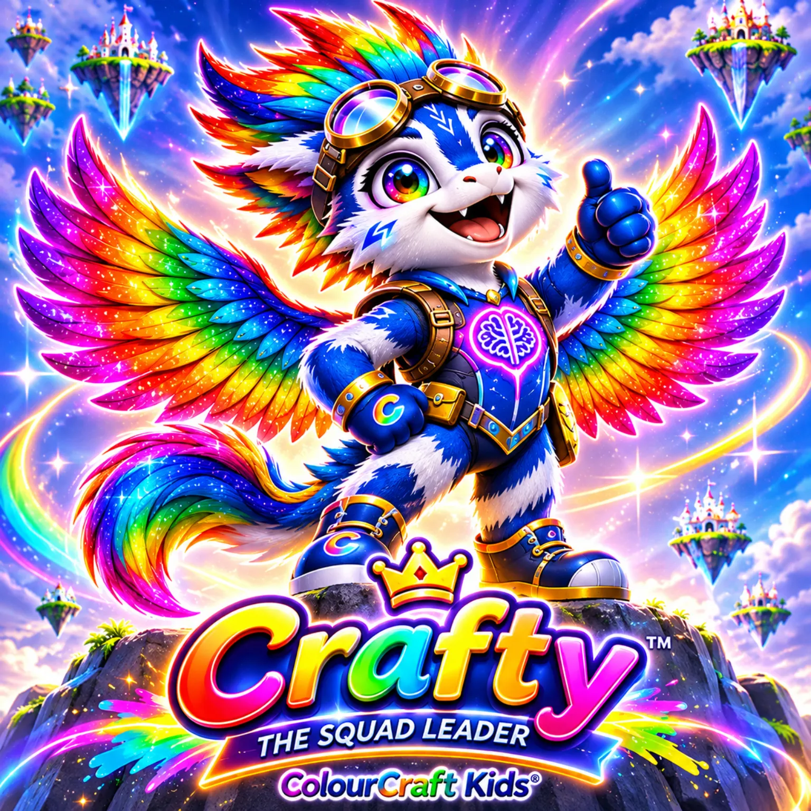

CRAFTY
University of Life
Welcome to Crafty's world.
Your activities
Crafty's Virtual Life
Explore how decisions affect your virtual world.
Local privacy controls
No account, camera, microphone or personal information is required. Activity records stay in a private local database.